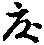

金剛般若經集驗記卷中
滅罪篇第三(并序三章) 神力篇第四(并序十六章)
滅罪篇第三(并序三章)
夫三界虗妄。一心所作。心在分別。一切俱邪。心絕攀緣。則萬殊皆正。夫心者。不內不外。亦不中間。心垢則眾罪咸生。心淨則眾罪同滅。禍福不牽於物。垢淨必在於心。故上士忘心。見諸相而非相。達人齊觀。悟非色而非空。由是犯律比丘。頓除疑悔。破戒菩薩。還入聖流。然則業以心成。罪隨心滅。式廣普賢之路。爰申滅罪之篇。
蕭瑀金剛般若靈驗記曰。鄜(音敷)州實室寺僧法藏。戒律清淳。慈悲普行。隨開皇十三年。於洛交縣葦川城造寺一所。僧房二十餘間。佛殿講堂等三口。並七架六栿(音伏)塼瓦砌餝。修理華麗。丈六大像一軀。總有四鋪。鋪皆十一事。莊嚴不可思議。觀世音石像一軀。金銅隱起。千佛屏風等。並莊嚴成就。至大業五年。勑但是諸處佛堂之內佛像者。並移州內大寺。伽藍補壞修理並已成就。法藏又造一切經。已寫八百餘卷。造長紙。於京城月愛寺抄寫。檀軸精妙。法藏至武德二年閏五月內。得患困重。經餘二旬。乃見一人。青衣服飾華麗。在當樓上。手持經一卷。告法藏云。汝一生已來。造大功德。皆悉精妙。汝今互用三寶物。得罪無量。我所持經者。是金剛般若。汝若能自造一卷。至心誦持。一生已來。所用三寶物罪。並得消滅。藏即應聲。若得滅罪。病又瘳(音抽)差。即發深心。決定敬寫金剛般若百部。誦持不廢。又云。一生已來。雖作功德。未曾抄寫金剛般若經。諸佛覺悟弟子。唯身上所有三衣瓶鉢等。即當盡捨。付囑大德。自知病重。遺囑弟子及親知。為造金剛般若經百部。舍婆提城舍衛國。各中半抄寫並莊嚴了訖。散與一切道俗讀誦。般若威力。不可思議。救拔一切眾生。作是語已。藏即命終。將至王所。具問一生作何福業。藏即分踈。造佛像。抄寫金剛般若百部。施一切人轉讀。兼寫餘經八百卷。晝夜誦持般若。不甞廢闕。王聞此言。師造功德極大。不可思議。即遣使藏中取功德簿。將至王前。王自開檢。並依藏師所說。一不錯謬。王言。師今造寺佛像。抄寫經典。及誦持般若。功德圓滿。不可思議。放師在寺。勸化一切讀誦般若。具修一切功德。莫生懈怠。師得長壽。後命終之日。即生十方淨土。
郎余令冥報拾遺曰。前校書即吳興[淡-火]嘉會。太宗時以罪徒配蘭州。自到已來。每思鄉邑。其後日。則禮佛兼於東南望泰山禮拜。願得還鄉。經二百餘日。永徽六年十月三日夜半。忽見二童子。儀容秀麗。綺衣紈袴服飾鮮華。云。兒等並是泰山府君之子。府君媿先生朝夕禮拜。故遣近接。即須同行。嘉會云。此去泰山三千餘里。經途既遠。若為能到。童子曰。先生但當閉目。兒自有馬。嘉會即依其言。須臾而至。見宮闕廊宇。有若人間。引人謁拜府君。府君為之興。須臾之間。延入曲室。對坐言語。無所不盡。府君說云。人之在生。但犯一事。生時不發。死後冥官終不捨之。但能日誦金剛般若經。大得滅罪。又云。前有一府君。為坐貪穢。天曹解之。問知今府君姓劉。(音流)不敢問字。謁見之後。每夜恒與嘉會雙陸。兼設餚饌。嘉會如廁。於小廳東頭。見姑臧令慕容仁軌笏(音忽)而坐。嘉會召問之。云。不知何事。府君追來已六十餘日。嘉會還。為府君言之。府君令召仁軌。謂之曰。公縣下有婦女阿趙。行私縣尉。他法抽殺。此嫗來訴。縣尉遂誤追明府君耳。府若庭前有一大盆。其中貯水。令仁軌洗面。乃賜之食。食訖云。欲遣兒送明府。恐為群兇所逼。乃自命一兒。故送仁軌。雙陸七局。其兒便還。云已送訖。又云。慕容明府不敢坐於大堂。今居堂東頭一小房內。嘉會即辭府君。府君放去。嘉會具為州縣官言之。州官初不之信。蘭州長史趙持滿。故令人於姑臧訪問仁軌。仁軌云。從去九月內。得風疾。手足煩疼。遂便灸灼三十餘處。家人覺其神彩恍忽。十一月初。便得療損。校其日數。莫不闇同。縣尉拷殺阿趙事皆實錄。縣尉尋患。旬日而死。初嘉會謁見府君之時。家人但覺其神爽昏耄而已。既而每日誦金剛般若經。以為常業。尋還本土。至今現在(丘貞明說。余令後見嘉會所說亦同)。
又曰。龍朔元年。洛州景福寺比丘尼修行。房中有一供侍童女任五娘死。修行為立靈座。經於月餘。其姊及妹弟於夜中忽聞靈座上呻吟。其弟初甚恐懼。後乃問之。答曰。我生時於寺中食肉。坐此大受苦痛。我體上有瘡。恐汙床席。汝可多將灰置床上也。弟依其言。置灰後看床上。大有膿血。語弟曰。姊患不能縫衣。汝大襤縷。宜將布來。我為汝作衫及韈(音袜)。弟置布於靈床上。經宿即成。又語其姊曰。兒小時患染。遂殺一螃蟹取汁。塗瘡得差。今入刀林地獄。肉中見有折刀七枚。願姊慈流。為作功德救助。知姊煎迫。卒不濟辨。但隨身衣服。無益死者。今並未壞。請以用之。姊未報。間乃曰。兒取去。良久又曰。衣服已來。見在床上。其姊試往視之。乃是所斂之服也。姊遂送至淨土寺寶獻師處。憑寫金剛般若經。每寫一卷了。即報云。已出一刀。凡寫七卷了。乃云。七刀並得出。訖今蒙福助。即往託生。與姊及弟哭別而去(吳興沈玄法說。與淨土寺僧智整所說亦同)。
贊曰。有情曰凡。無愛為聖。惟罪生滅。隨心垢淨。正念忘懷。即邪為正。六纏九惱。同歸實性。
神力篇第四(并序十六章)
昔者媧皇御極斷鼇以補天。夷羿(音詣)彎弓解鳥而落日。璿臺之上。載駈夏后之龍。瑤水之濵。更舞周王之駿。(音浚)仙公之潛流吐火。元方之匿影分形。況乎道契如如。切無等等。將開于塔。移天人於他界。不起于座。示妙喜於閻浮。聖烈巍巍。固無得而稱矣。故迹其尤異者。列為神力篇。
蕭瑀金剛般若經靈驗記曰。梁時有一婆羅門師。名法藏。能持經呪辟諸邪惡。有一小僧。學呪數年。自謂成就。堪伏邪魅。同行來詣江畔。遂投宮亭湖神廟止宿。誦諸禁呪。其夜廟神遂來殺之。藏聞弟子身死。怨恨。自來到神廟廡。夜宿謂呪。因亦致死。于時同寺一僧。每持金剛般若經。聞藏師徒並為神殺死。故來神廟。座上誦般若經。夜半聞有風聲。極大迅(音峻)速。須臾見一大人。身形瓌異。奇特可畏。種種形容。眼光似電。師端坐正念。誦經不輟。不怕不懼。神來至前。攝諸威勢。右膝著地。合掌恭敬。聽誦經訖。師問神曰。檀越是何神祇。初來猛迅。後乃寂然。神言。弟子是此宮亭湖神。為性剛強猛戾。見師誦習大乘經典。功德大大不可思議。是以伏聽。師言。檀越既能如此信敬。何意打殺前者誦呪二僧。神言。彼僧不能誦持大乘經典。弟子入廟。逆前放罵。專惡言降伏弟子。二僧見弟子形貌。自然怕死。非故殺比丘。諸人知師入神廟宿。恐同前二僧。至明相率往廟迎問。師乃安然。諸人等甚大嘉慶。問師具知。諸人因此發心受持般若經者甚眾。
又貞觀元年。蓬州儀隴縣丞劉弼。前在江南任縣尉。忽有一鳥於房門前樹上鳴喚。人云。是甚惡鳥。此鳥至者。必殺家長。弼聞恐懼。思念無計。夜間夢見一僧。令讀金剛般若經一百遍。善神來拔。此樹隔舍擲著大街巷中竟無亦答。般若之力其大矣哉。
郎余令冥報拾遺曰。隴西李虔觀。今居鄭州。明慶五年。丁父福胤憂。乃刺血寫金剛般若經。及般若多心經各一卷。隨願往生經二卷。出外將入。即一度浴後。忽聞院中有異香氣。非常郁烈。隣側並就觀之。無不稱嘆(余令曾過鄭州見彼親說。友人所傳)。
又曰。曹州濟陰縣西二十里村中。有一精舍。龍朔二年冬十月。有野火暴起。非常熾盛。乃至精舍。遂踰越而過。兼及僧房。草舍焚燎總盡。唯有金剛般若經一卷。猶儼然如故(曹州參軍事〔廗〕元褘所說)。
又曰。明慶年中。平州人孫壽於海濵遊獵。見野火炎熾。草木蕩盡。唯有一叢茂草。不被焚燎。疑此草中有獸。遂以火爇之。竟不能著。壽甚怪之。遂入草間尋覓。乃見一函金剛般若經。其傍又見一死僧。顏色不變。火不延燎。葢為此也(孫壽親自見。說之)。
又曰。前大理司直河內司馬喬卿慳。純謹有至行。永徽年中。為揚州戶曹。丁母憂。居喪毀瘠。刺心上血。寫金剛般若經一卷。未幾於廬(音閭)上生芝草二莖。經九日長一尺八寸。綠莖朱蓋。日瀝汁一升。傍下食足。味甘如蜜。盡而復生。如此數四(音鄉同僚數人向余令說。余令孝子傳亦具說焉)。
大中大夫楊體幾。京兆人也。去大極元年。任饒州長史。奉勑兼充銀山大使。檢校採銀。其銀之窟。所役夫匠。動越萬人。側近百姓。共為章市。其市之中。總無瓦屋。咸以篷篨為舍。簷廡(音撫)相接。其夜有一家忽然失火。市內之屋。蕩盡無餘。唯中心一家。火所不燎。體幾巡檢。問其所由。為家內有一老人。常受持金剛般若經。般若之力。火不能燒。合州之中。莫不驚異。
梓州惠義寺僧釋清虗。俗姓唐氏。立性剛烈。少誦金剛般若經。去萬歲通天元年十月初。於齊州靈巖寺北三總山中。深心發願。為三途受苦眾在等。受持金剛般若經。願一切眾生。早得離苦解脫。從十月三日誦至六日。有七頭鹿忽來聽經。及至誦時即來伏聽。誦訖便去。及其總了。更不復來。僧清虗去萬歲通天元年十月二十三日。日西於齊州靈巖寺地三總山中。端坐誦經。忽非似夢。遂不見所住處屋宅及山河石壁。唯見一城。似梓州城。其僧從東門入。至一橋見一捉鋪人。是山東人士。遂行出城西門可五六里許。又見一城。在於道左。其城縱廣可有五里。其僧下道至城東門。其門纔猜可容一人入。僧問捉門者曰。得知大王何時放地獄受苦眾生。報云。昨日午時。齊州靈巖寺有一禪師。手執錫仗。年可七十。已上來詣王前。語王言。有一客僧為三塗受苦眾生誦金剛般若。王得知否。天王何時息放地獄受苦眾生。王報阿師言。弟子先知。明日午時為阿師放却少分輕者。其捉門人謂其僧云。阿師即去。請更莫語。其僧遂迴還從西門入。到一驛門前。前見一顆苽。如椀許大。破作兩片。僧食一片。仍餘一片。至前捉鋪處。鋪家問僧何處得此苽。請乞一片。其人得此苽食。口云。十月有此美苽。所言未訖。忽見城西門外有無量人眾。入城門來。婦女多。大夫少。縗(音催)麻服者眾。吉服者稀(音希)。至其僧坐前。各各禮拜。蒙阿師濟拔。其僧報云。元不相識。何處救拔。後有三箇橑奴。亦來禮拜。蒙阿師救拔弟子。其僧問云。你是誰家小兒。面無血色太劇顇。從何處來。衫衣並新。何因如此。答言。我是玄宗觀家人。為盜觀家糓麥。治酒買肉。不知多少。破閻羅王勘。當經今五年。不識漿水一滴。其衫是生時所造。死後始著。當被勘。當其衫被剝。掛著奈何樹頭。所以得新。語訖辭去。靈驗如此。
萬歲通天元年十一月二十三日。清虗在齊州三總山中。暮間忽有東地風起。遙見野火燒山。相去可有一十餘里。至人定時。其火漸近。去僧坐處司百餘步。其僧心驚。誦經念佛。并誦十一面呪。其火去所住屋可五十步已來。忽然迴風。其火遂自滅。逮(音代)至一更。忽然還熾。僧將掃帚撲火。遂不焚。去屋不逾十步。火即自滅。其屋十步之內。茅共簷(音鹽)平。仍有亂草一聚。去脊不盈數尺。至時亂草及茅。並為煨燼。唯有臥屋得免火燒。其東北兩面。屋簷并被火燒。信知般若之力。不可思議。
登對元年二月。其僧清虗至徒來山中。尋常誦經。不過兩遍。腰脊疼痛。不能堪忍。僧於佛前遂發誓願。弟子今夜結跏趺坐。為一切眾生誦金剛般若。必滿五遍然後始息。縱使疼痛。狀猶割刺。終須滿數。以死為限。誦至三遍。骨節有如支解。誦至四遍。有物在佛堂內闘。聲似水牛大蟲爭力而闘。佛堂亦動。誦至五遍。將半諸痛都愈。舉目四望。朗然明徹。佛殿講堂。一皆不見。唯覺端坐在於空中。大地平正。無有高下。及至同伴來喚。空聞其喚。不見有人。同伴曳手挽起。方始醒覺。般若神力。無得而稱焉。
聖曆元年仲秋八月。其僧清虗。時在豫州。向法王寺禮拜。見舍利塔內著一切經。其塔上四面無門。遂有群鴿。入舍利塔內。見僧入塔禮拜。一時飛散。其僧禮懺既畢。至塔門內坐。一鴿從空飛下。直入僧懷。歷左右肩。(音堅)遂至頭上。下繞經三帀。便即高飛。鳥尚解敬持經。在人亦希。勉勵。(音例)。
長安三年閏四月內。其僧清虗。向藍田縣南山中悟真寺坐夏。其寺上坊禪院。院舊無泉水。皆向澗底取水。往還十里有餘。禪院僧徒。將為辛苦。華嚴法師康藏。共三綱平議。眾請祈泉。其僧報眾言。此火難事。徒眾咸曰。阿師既在此座夏。作意念誦。為寺家祈請。不廢脩道。願不推託。既不能苦違眾心。欲覔一困處念誦。其禪院上坊下坊皆亦人滿。唯中間有一彌勒閣。閇而恒鎖。無人敢開。僧既見閇。即喚直歲平章。欲開此閣。於中念誦。主人并客僧等語其僧言。莫向此閣。閣中有一黑蛇。其大如鉢。身長二丈。常護此閣。恐損阿師。其僧報云。江南有宮亭湖神。身長數里。變化自在。亦是大蛇。能致驟雨飄風。尚來歸伏。況乎小者。亦何足言。其僧即索鑰(音藥)匙開門。把火直入。更不見物。唯聞蛇腥。其僧正念燒香啟請。弟子聞大身眾生。守護此閣。恐是過去賢聖。或是山龍諸神。弟子今日向此閣中。一心念誦。為上坊禪院求請一泉。幸願諸神。咸加擁護。勿令恐畏。聽誦金剛般若。布施弟子一箇小泉。以供上坊禪院。即至心念誦。一坐三日三夜。目不交睫。(音接)心眼之中。見三婦人在彌勒閣西北。於山之腹。以刀子剜地。忽然不見。迄于明發。遂向東北。臨澗合眼誦般若經。見一道水。從婦人刀子掘地處來。歷僧前而過。經三五日。傣然常見。未以為信。誦仍不輟。更經二日。轉轉分明。其僧即移向見婦人刀子掘地處誦經。合眼還見水從背後流出。又經三日。其僧遂取杖抉看。撥(音鉢)却木葉。見一濕地。大小如二尺面盤。將鋤掘之。遂見一水脈。因成一坎。可受石餘轉。更至心誦得五遍。其坎(堪感反)中水。不覺滿盈。引向禪庭。供給眾用。則知聖無不應。感而必通。信乎般若之功無得而稱者也。
長安四年三月末。其僧清虗向少室山少林寺坐夏。其寺禪院在西。其院北山上有一佛堂。但是師僧。並不敢侵夜往。彼有一律師。侵夜往彼誦律。聞空中有言。阿師急去。遲即損害阿師。至二更盡。未及得出。被神將刀弰(音笑)刺其肋(音勒)下。便即下山而歸。至明日午時。律師便即捨壽。不經半歲。有一小師。專持火頭金剛神呪。徒眾同試呪力。小師即作法呪樹。其樹或眾條俱束。或群柯同屈。眾見靈驗。即共小師平議。上坊有一故堂。前後無敢宿者。阿師既持神呪。敢於其中念誦宿否。小師報言。神靈勝伊萬倍之處。尚自降伏。此亦小小之者。蓋不足言。小師乃嚴持香鑪。往彼念誦。恃其呪力。降伏彼神。其夜。神遂現身。捉其兩脚。擲向澗底。七日失音。半年已來。精神短少。少林大德。承聞清虗在京之日。於悟真寺請泉。兼伏大蛇。俱有神驗。遂語僧曰。阿師持經。大有靈應。請阿師作少法事。遣眾知聞。報云。大德欲遣清虗作何法事。僧眾同曰。上坊有一佛堂。比來無敢宿者。阿師能獨自念誦於彼宿否。其僧報曰。此是三代尊客住持之處。正是師僧依止之處。云何不得。其僧即辨香油。往彼念誦。再宿三日。都無所見。僧等問禪院僧曰。昨日□□□僧已三二日。總不見出。向何處去。禪院僧等報言。上坊佛堂之中。便宿念誦。大德等令急喚取。參差被神打殺。大眾自來同喚。阿師出來。其僧報言。終無所慮。徒眾咸曰。阿師未異凡人。共我一種。何故於此。自欲損害。答曰。萬事不畏。大德但歸。及至一更向盡。其神即到。於佛堂東。轟然發響。似擲數十口尾。聲震空中。其僧即燃火出看。寂然無所見。身毛皆竪。即誦十一面觀世音呪。繞佛堂一帀。堂內若水牛闘聲。像亦震動。誦呪七遍。其聲逾烈。轉更哮吼。響谷動山。即向佛堂前。正立思惟。欲不敢入。忽然更却思惟。如何在此。不能降伏。捺心即入。聲更轉盛。堂中之燈。尚亦示滅。呪既無驗。即誦金剛般若經。及誦一遍。其聲漸小。至於三遍。其聲即斷。迄于天明。寂然安靜。故知般若之力。不可思議。
去神龍二年十二月十一日。齊州義淨三藏及景闍梨。奏清虗入內祈雪。二七日。雖得少分。未能普足。勑語清虗。阿師祈請。雖不能稱意。任阿師選寺住好否。其僧自恨祈請不稱聖意。遂答勑云。實不歡喜。大德等見作此對。亦皆失色。阿師既觸天威。即合付法。勑又云。如得雨雪。即與阿師亂綵二百段。兼授阿師五品。并作薦福寺綱維。阿師何意。遂不歡喜。答云。幸蒙天思。驅使祈請雨雪。自恨上不覆天心。下不允人望。愚誠徒懇。不愜聖心。夙夜兢懼。唯知待罪。濫荷天恩。所以不喜。勑云。且放阿師出外念誦。還須祈請。忽得雨雪。即須進狀。因便奏云。此度不降雨雪。即為一切眾生燒指。又降勑曰。朕喚阿師來供養。可遣阿師來受苦。又父母遺體。豈可毀傷。阿師必不得漫有傷損。食訖。辭聖上出。即向南山炭谷瀧湫(子由反)上祈請雨雪。雖復雪下。終不能稱心。更移就索曲村安樂佛堂中誦金剛般若。又經七日。時得薄雪。還不稱心。遂即發願燒指兩節。經一日一夜。燒未盡間。忽然四面雲合。雨雪參雜而下。眾皆愕然驚怪。二日始絕。百姓父老等。連狀欲奏。且於薦福等共三藏平章。清虗昨城南燒兩節指。為法界祈請雨雪。燒盡兩節。眾人同看。所有骨灰。今示見在。今朝村人大小欲為塗藥。其兩指節還復如故。三藏遂云。此事難信。不近人情。伊是凡僧。未至羅漢。如何燒指已盡。更得却生。既非聖流。無有此事。即語村人父老等急歸州縣知聞。直是將作妖惑。欲益返損。却責老人。非但誑炫凡庸。亦是誣罔聖上。僧徒聞此。轉加不信。其僧既見眾人起謗。更入道場。啟請十方諸佛。一切賢聖。弟子為法界蒼生。燒指祈雪。蒙諸天龍王等。應時降雪。又令弟子所燒之指。燼而重生。咸起謗言。不加淨信。誤他四眾。墮於地獄。弟子今更發願誦般若經。兩日之間。願生指重落。至于二日。勤加念誦。兩節重生之指。還復更落。眾見指落。重起謗言。阿師當時燒生。如今始落。其僧即報眾曰。且向城南前祈雪處。於彼養瘡。還遣重生。不知得否。眾人同曰。阿師似著狂病。常行謗語。即往城南而養瘡。念誦不輟。至十五日內。指節又生長一節半。指甲亦出。眾人見者。莫不驚異。咸曰。亦不足怪。此道人有妖術。則知般若之力。二乘之所不知。凡俗聞之。皆能起謗。
去景龍二年。清虗始還故里。至太極元年六月二十九日夜。東江水漲。僧時在惠義寺停。其水直入寺中。眾僧各自併當衣物。其僧房中有一小閣。所有衣物。并遂閣上。便即然燈趺而坐。一心正意念誦金剛般若經。良久聞水入房聲。把火照看。了無一滴之水。其餘諸房皆被水入。僧徒聞見非是一人。般若威力。卒難縷說。
陳文建者。梓州郪(音妻)縣人也。身有騎都慰勳。每於州城門首堂上。常誦金剛般若。發願為父母祖父母等。誦滿八萬四千遍。尋亦誦了。刺史元善應氵事。被追入京。令文建誦般若經。滿五千遍。建即為誦。及善應至京。皆得清雪。
銅山縣人陳德者。常以寫經為業。忽然因病疹。為冥司所追。見地下築(音竹)臺。德問。是何臺也。冥司報云。是般若臺。為陳文建欲至。築此臺以待之。其德却蘇。具說此事。遠近知聞。競持般若(牛頭山靈瑞寺禪師惠融所說)。
趙郡孛(音貝)廷光者。為德州司馬。深信因果。諸持金剛般若。每眼所見。常有圓光。誦念稍勤。其光漸大。誦念若簡。其光即小。即知般若冥感。精誠所通也。
贊曰。大哉神力。不可思議。蓮承法座。芥納須彌。地變神足。天開聖池。非定非慧。斯焉取斯。
金剛般若經集驗記卷中